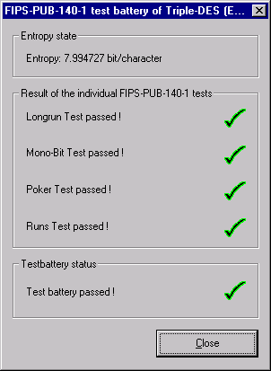
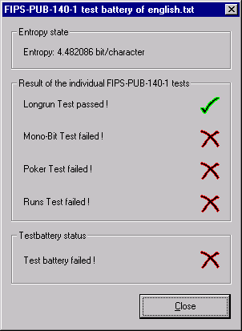

You can reach this dialog via the menu entry Analysis \ Analyze Randomness \ FIPS PUB-140-1 Test Battery. The prerequisition is, that you have loaded a document of at least 2500 bytes length.
A default dialog for the FIPS-PUB-140-1 test battery looks like this:

In this dialog there are no parameters to choose from. The individual FIPS-PUB-140-1 tests are automatically performed.
Within "Entropy state" you additionaly get the entropy of the file examined. For every individual test the user is informed whether the test has been passed or not.
The test battery is only passed if all four individual tests are passed.
If one or more tests are failed, then the dialog looks like this:
